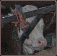
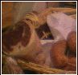

|
|
|  |
Siamo un'azienda agricola
La Prateria è un'azienda agricola in piena regola, che alleva bovini da latte e
da carne, pollame, ovini, suini, bufali, equini e daini. Ha conservato però i sistemi d'allevamento
di un passato ormai lontano, dove i mangimi non erano trattati e i prodotti
più genuini.
|
 |
Siamo distributori
La Prateria distribuisce direttamente tutto quello che produce, offrendo un servizio
impeccabile e una qualità dei prodotti di altissimo livello. Oltre ai migliori tagli di carne
bovina, ovina e suina, troverete il nostro pollame, rigorosamente allevato a terra e le uova,
fresche di giornata (a volte direttamente dal pollaio!). Seleziona con cura e vende anche prodotti di altre fattorie,
ottenuti con le stesse regole di qualità e genuinità Troverete inoltre un sorriso cortese ed
il giusto consiglio per i vostri piatti più riusciti!
|
|  |
Ma non solo...
La Prateria vi offre un'ampia scelta di prodotti tipici delle alte valli lombarde,
che spazia dai formaggi più freschi e genuini, di mucca o di capra, ai salumi più appetitosi.
Troverete inoltre conserve di frutta, conserve salate, verdure da coltivazioni biologiche...
Il nostro scopo è quello di raggiungervi e conquistarvi con i sapori di una volta,
con la qualità delle cose genuine e salutari... Vi aspettiamo!!!
|
|
|
 |
|
SIAMO PRESENTI AL MERCATO CONTADINO DI BOLLATE
(Piazza della resistenza)
IL 1° E 3° SABATO DEL MESE
DALLE 8 ALLE 13
ORGANIZZATO DA CIBO PROSSIMO (www.ciboprossimo.net)
E AL MERCATO CONTADINO DI SARONNO (Piazza mercato)
IL 2° E 4° SABATO DEL MESE DALLE 8 ALLE 13
Vi aspettiamo!!
|
|
|
 |